Learning to use fur knife
This is the fur knife. Fur can not Be cut by scissors because that way it would trim the fur itself. The blade must be always very sharp and
It is important to change it very often because it goes blunt very quickly. The blade need to go in only a few
Millimetres otherwise it can cut the fur as well. They are razor sharp so they must be kept carefully and put away
When they are not being used. Because fur is a natural material it is not even in many places and the fur direction can be at an angle. When this is the case the blade needs to be hold at the same angle to make sur the fur is not cut.
Learning to do air galloning and practice using knife

ir galloning is done by cutting about 1 cm holes on the skin very tight Next to each other. It is to make the pelt more flexible, to fit the curves of the body. It is a good exercise to practice cutting with the fur knife, around more than 100 holes. This job took me about a day and a half.
Learning about different types of fur
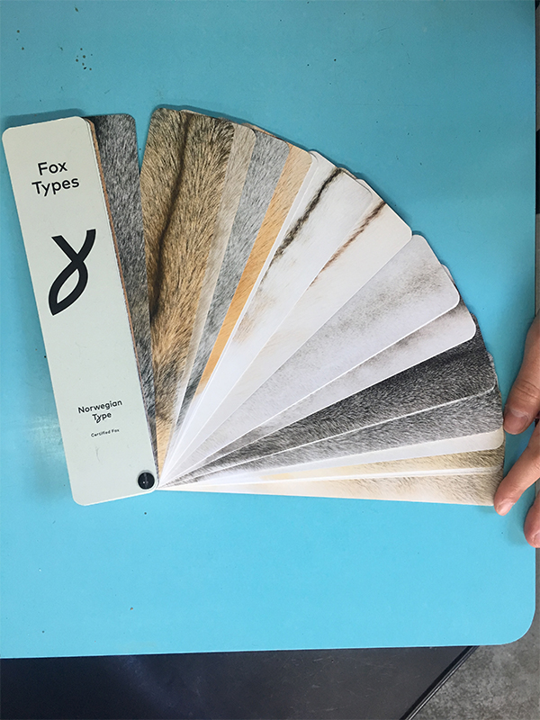
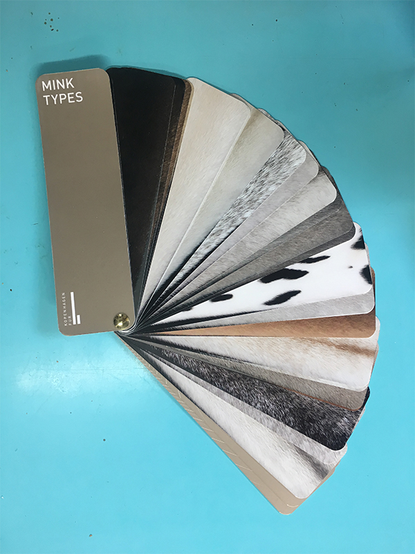
The Two most popular farmed animal for their fur is fox and mink. It is very easy to distinguis because fox has a lot more and a lot longer hair, whereas mink has short lead hair. They come in many natural types. Colour and
Type are not to be mistaken because type can be a name of a color. Then there is the density and quality. This is called the grading system.
Learning to repair collar with glue and leather
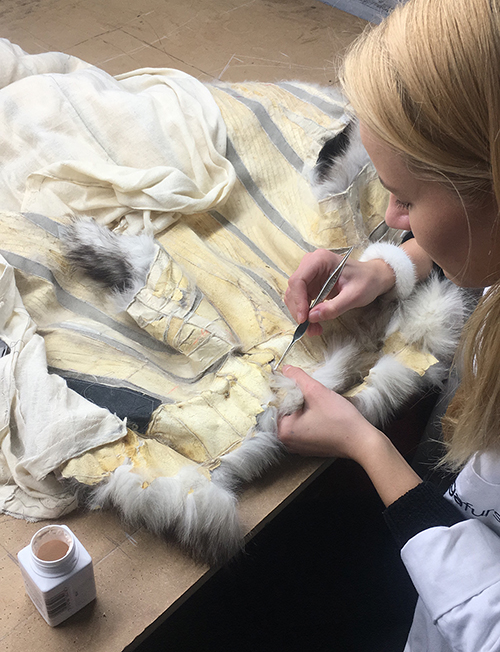
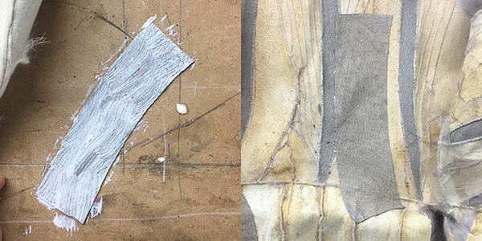
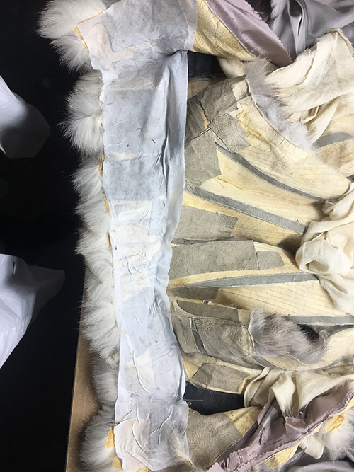

This is a very old fox coat which probably has not been kept in cold store therefore the skin dried out in warm weather. Pieces of leather with fur has fallen out which I stuck back with glue. Then I stuck leather strips
Over the repaired areas to help strengthen the structure and make sure it holds in place properly. Than
I put lining on top to give it extra hold. It was a very time consuming process takin around two days to complete.
Learning to use the fur maschine
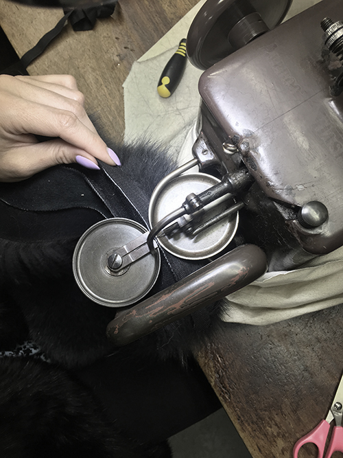
The fur Maschine is very different to a normal sewing machine. It has two cups which capture the fur and the needle goes thought. Depending on the condition of the fur, if its old and in. A bad condition the stitches needs to be deeper around 3-4 mm, and if its new and in good condition arouns 1-2 mm. It takes a lot of practice .
Shortening a coat
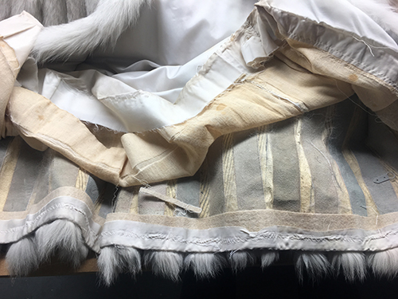
To shorten a coat first the lining needs to be taken out up until the area where the fur will be cut off. Then the length needs to be measured from the shoulders, making a mark, and then putting it on the mannequin to measure the length from the bottom equals. Then this needs to be cut and then lining to be sewn back by hand.
Project #1 Purse
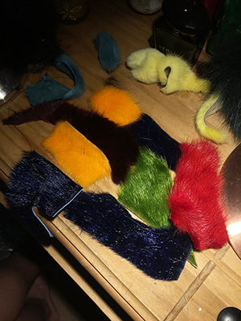
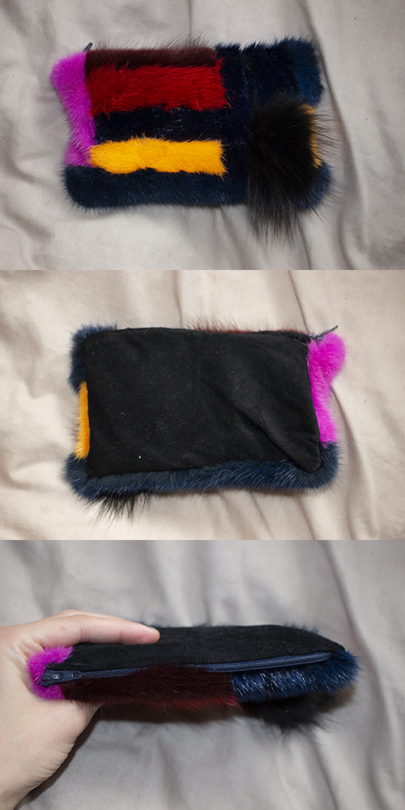
This is a little project I made. A purse, to practice sewing with the fur machin. I have found the pieces in the scrap box and cut them to shape to fit each other. Then stuck iron on lining to it and sew the leather to the other side then sewn the zip to it.
Project #2 Ankle warmers
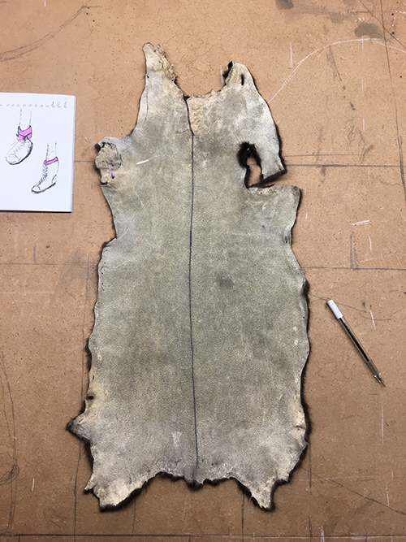
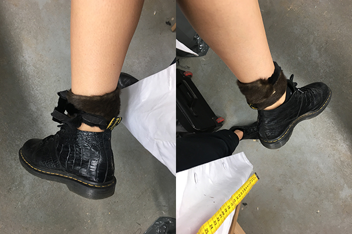
This is another project I have done to practice using the fur machine. This is meant to be and ankle warmer. To keep my ankles warm when the tempretures drop. It is made of mink. To make this i have used the fur maschine.
Making a T-shirt
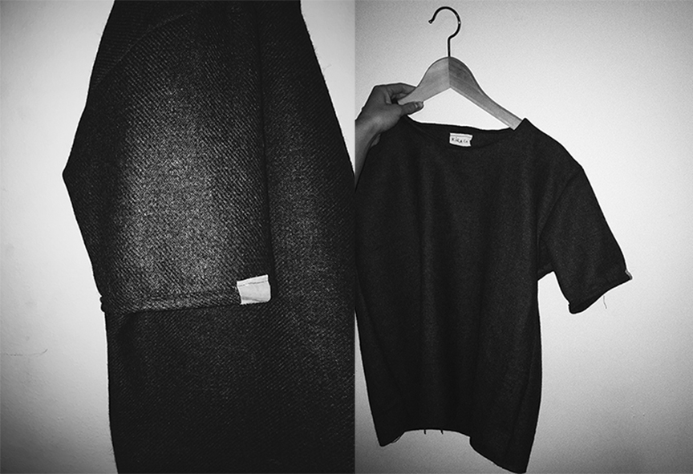
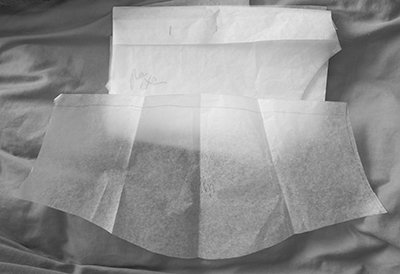
Also, to practice taking pattern from other clothes and sewing with domestic sewing machine I made this t-shirt.
The pattern is taken from one of my old t-shirt which I unpicked and took apart. I drawn out the pattern to grease paper and cut the fabric. It was a very good sewing practice.
Ethics and sustainability on using fur
please find my ethics and sustainability essay on vle.
Consulting with client
I have been working with a photographer who wanted a new website.
She was using a platform which she was not happy with and I
recommended to use Wordpress. She thought it wa a good idea because of
the benefits and the easy use of Wordpress. Also it worked out cheaper for her.
Check out the website I made for her here.
Transferring existing domain
To transfer her existing domain I had to get autherisation code from her the previous platform
she was using for her old website and request a swap from wordress. I took about one week
for her domain do be activ on her new wordress website.
Wordpress
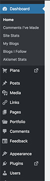
It took a little bit of time to get familiar with the way wordpress admin works.
Watching tutorials on youtube has helped me a lot in figuring out things that I did not know
by myself. Also the business plan allowed me to chat with wordpress developers, and I
just had to tell them what I was stuck with and they told me what to do exacly.
For example I founf out that I can not include full width images to all pages, only to the ones
with the theme of 'homepage'.
Choosing the right theme
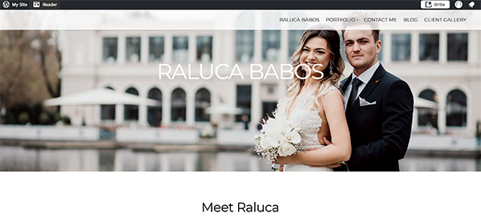
Since she is a photographer, I had to consider very carefully what theme to choose for her website.
She has sent me some websites that insipre her, and it helped me to look for something
similar. Then I showed her the ones I thought would suit her needs the most and let her
pick the one she liked best. It is a theme that has a portfolio page option which allows
her to showcase clearly and beautifully her photoshoots.
Wesbos online shortcourse completion
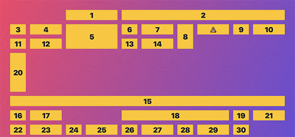
I have completed the Wesbos CSS grid online shortcourse to learn how to use
CSS grid. It consists of 25 modules each 5-30 minutes long. Each module has the completed
version as well as the uncompleted. He talked through each module and meanwhile
I completed them. I have learnet many new things about CSS and cases where it might more
appropriate to use flex box instead. One of the most important things I have learned
is to use grid template column attribute.
Completing exercises from HTML & CSS by Jon Duckett
I have purchased this book to give my learning a structure, as I am self thought, it is
important that I learn the fundamentals first, instead trying to learn something
complicated. This book is really helpful because it builds up on each chapter therefore
everything makes sense and helps me to learn quicker in less time. I also love how this book
explains everything with images as well.
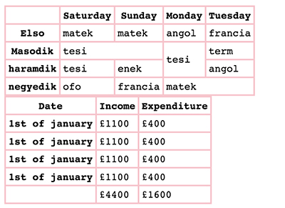
This is an example of a table I have learned to do from the book. What I would like to learn
more about and practice is to make a form from scratch.
Project-Customize your bear- First mock up for phone
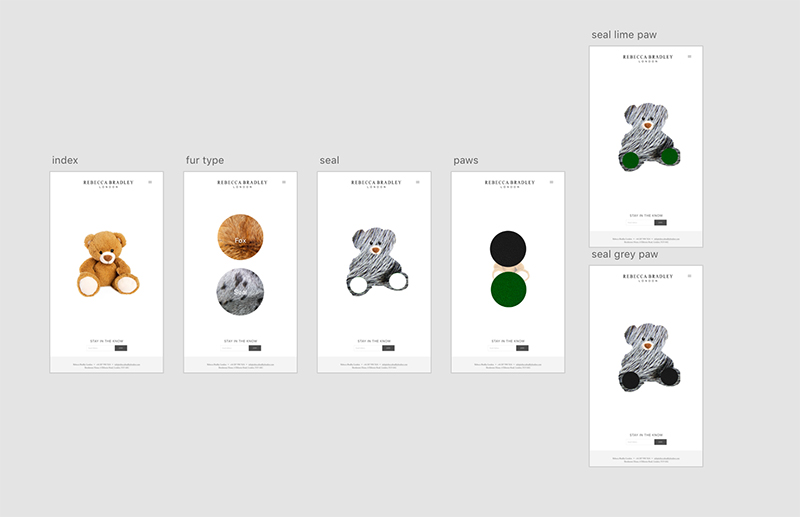
As part of my internship I started developing a fur bear customisation application. This
is the first mock up version for phone. I have done this in just a few hours to be able
to show how it would work. The next step was to make a desktop version and expand the
choices.
Project-Customize your bear-for desktop
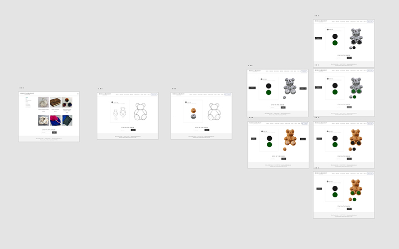
This is the first desktop version of the user interfaces of the application.
This needed to be extended and more options to be added.
Project-Customize your bear- desktop extended version
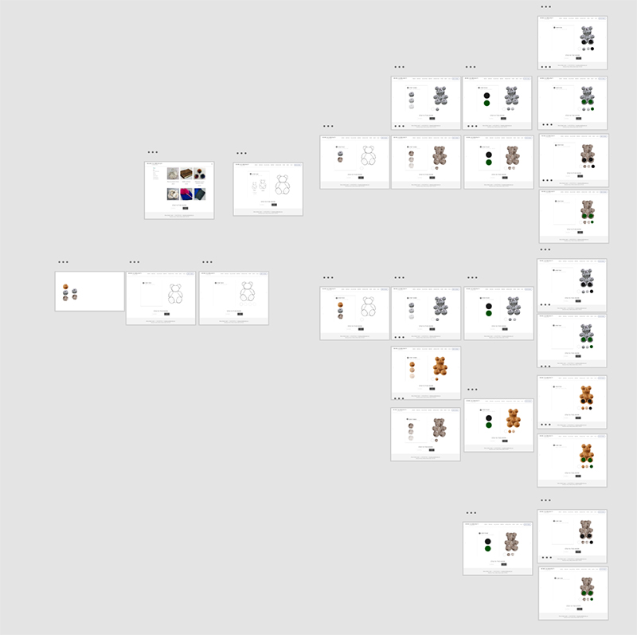
This is the second desktop version of the User interface mockup of the application.
Integrating it to the existing website
The enxt question was how to integrate this to the existing website. I was not sure
what are the restrictions of her existing theme, but suggested to add custome code to a
new blank page on her website. I consulted with her web developer and found out that
they are going to make her a new online shop with a different platform called Magento where
this is possible with a plug in so it was not necessary for me the write the code for the application,
however it could still be a project.